Humor Matemático
Viñetas
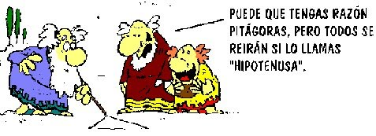 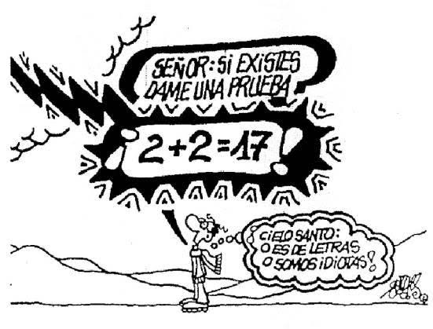
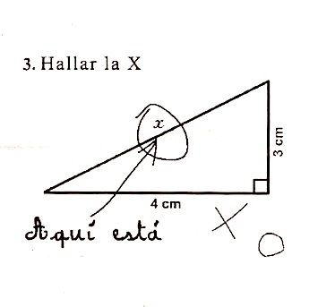
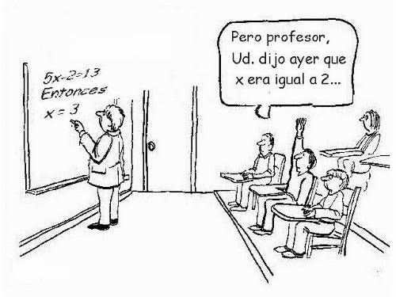
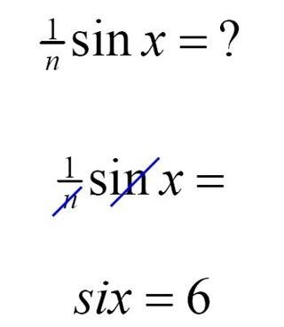
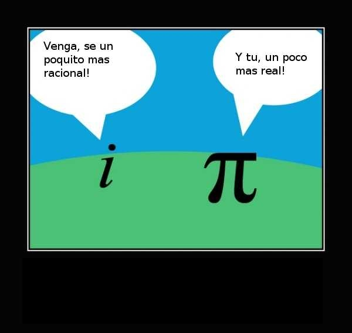
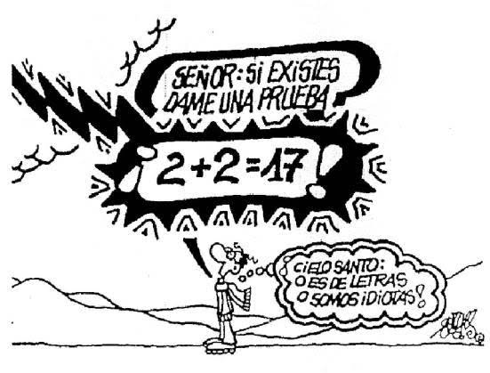
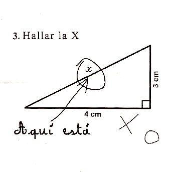
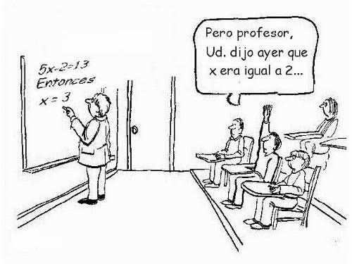
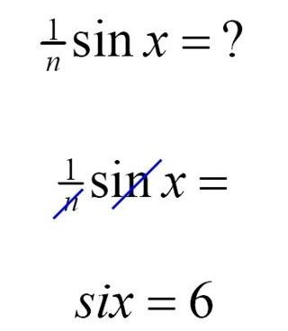
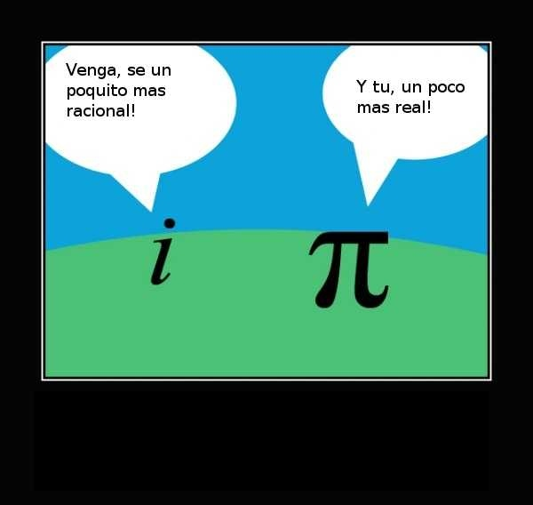
En matemáticas no entiendes las cosas. Tan solo te acostumbras a ellas. Johann von Neumann
No te preocupes por tus dificultades con las matemáticas. Te puedo asegurar que las mías son aún mayores Albert Einstein
Se ha convertido casi en un comentario cliché, que nadie hoy en día alardea de ser un ignorante en literatura, pero es aceptable socialmente, alardear de ignorar la ciencia y afirmar orgulloso que se es un incompetente en matemáticas Richard Dawkins
Existen tres tipos de mentiras: la mentira, la maldita mentira y las estadísticas Mark Twain
El olvido de las Matemáticas perjudica a todo el conocimiento, ya que el que las ignora no puede conocer las otros ciencias ni las cosas de este mundo. Roger Bacon